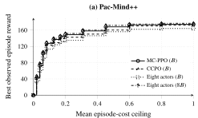
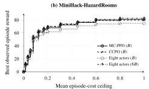
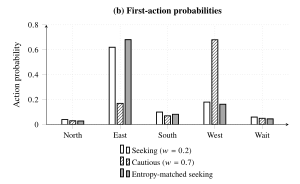

Changing priorities after training
Train one policy, then make it more or less cautious at deployment without retraining. A control input selects its mood, from reward-seeking to cautious, while the network weights stay fixed.
{% include paper-link.html %}A shortcut can be worth taking until a hazard appears. The agent then needs to choose a detour, but also recognize when it can safely resume its original route. We study both decisions: entering caution and releasing it.
During training, the policy learns to weigh reward against cost according to a control input. Its reward-seeking mood favors progress; a cautious mood gives hazard avoidance more weight. At deployment, a separate risk estimate guides when to switch between them.
The two navigation tasks make this trade-off visible. Pac-Mind++ is a maze where the agent collects pellets while avoiding ghosts. MiniHack-HazardRooms, shortened here to HazardRooms, asks the agent to find an amulet through rooms with keys, doors and hazards. The animations above are illustrations of the control idea, not measured runs.
A cost-limit policy, CCPO, is competitive at the same training budget. Its coverage is 0.747 versus our 0.768 in Pac-Mind++, and 0.698 versus 0.699 in HazardRooms.
The three results come from separate evaluations in Pac-Mind++, a pellet maze with moving ghosts. The training comparison excludes calibration.
Our mood-conditioned PPO policy, MC-PPO, retains 98.0% of an eight-policy library's reward-cost coverage in Pac-Mind++ and 97.2% in HazardRooms, using one-eighth of its policy-training interactions. Coverage measures the area of reward and cost trade-offs the controller can reach.
At equal total training budgets, one policy covers more of that area than eight policies trained separately. The comparison below includes the stronger of the two eight-policy mixing rules at each budget.
| Controller | Training | Pac-Mind++ | HazardRooms |
|---|---|---|---|
| One policy (MC-PPO) | 1× | 0.768 | 0.699 |
| One policy (CCPO) | 1× | 0.747 | 0.698 |
| Eight policies, score mixture | 1× total | 0.711 | 0.643 |
| Eight policies, action mixture | 8× total | 0.784 | 0.719 |
MC-PPO has separate inputs for reward-cost preference and action sampling. CCPO, short for Constraint-Conditioned Policy Optimization, uses a cost threshold instead and reaches comparable coverage here, especially in HazardRooms.


Both libraries in the charts mix action scores, called logits. An action mixture combines action probabilities instead. The curves show the best observed reward within each cost ceiling. Charts: paper Figure 4 ↗ · Coverage and 95% intervals: Table 13 ↗
From the same saved states where a risk alarm fires, entering caution reduces failure over the next 100 actions. Both responses use the same trained policy; each continuation keeps the original task deadline.
A lower temperature concentrates action selection on the choices the agent already prefers. Keeping the reward-seeking mood and matching caution's action concentration lowers maze failure to 8.4%; changing the mood reaches 5.0%.
| Response | Pac-Mind++ | HazardRooms |
|---|---|---|
| Pursue reward | 12.6 [11.4, 13.9] | 18.4 [16.7, 20.1] |
| Reward-seeking, matched concentration | 8.4 [7.4, 9.5] | 13.1 [11.7, 14.6] |
| Caution | 5.0 [4.3, 5.8] | 7.9 [6.7, 9.2] |
| Stronger caution | 3.9 [3.2, 4.7] | 6.2 [5.1, 7.5] |
Among continuations from alarm states, stronger caution lowers short-window failure further, but maze completion falls from 63.4% under caution to 49.2% under stronger caution as timeouts rise.
In a separate evaluation of whole episodes from reset, releasing caution when risk subsides raises maze completion from 62.1% to 64.6% compared with leaving it active after the first alarm. The paired gain is 2.5 percentage points, with a 95% interval of [0.8, 4.2]. Failure changes from 4.7% to 5.0%, a paired increase of 0.3 points [−0.2, 0.8].
Alarm-state comparisons: paper Tables 11 and 12 ↗ · Whole episodes and paired 95% intervals: Table 3 ↗
A mood setting does not directly specify a cost budget in task units. Validation runs let us select the highest-reward setting whose upper estimate of mean episode cost stays at or below the requested limit, then test it on unseen layouts.
For a requested mean cost of 0.20, test cost is 0.168 in the maze and 0.167 in the rooms task. These averages meet the request, although about 19% of estimated layout-level means exceed it.
Calibration cost. Selecting settings uses 28,928 episodes per trained replicate; fitting and checking the risk alarm adds 1,024 episodes. The data are reused across all reported cost requests and alarm thresholds. Both collections are additional to policy training, and their interaction counts depend on episode length.
The 95% intervals are [0.158, 0.178] for Pac-Mind++ and [0.157, 0.177] for HazardRooms. Estimated layout-level means exceed the request in 18.8% and 19.8% of seed-layout cells.
When ghosts pursue the agent more often, maze cost rises to 0.248 under the original calibration. Recalibrating on the changed task brings it to 0.181 without retraining the policy, while reward falls from 134.2 to 128.3. This repeats the calibration collections under the changed hazards.
Cost requests: paper Table 5 ↗ · Changed hazards and calibration costs: Table 10 and Appendix D.6 ↗
The cost weight sets the mood by changing which actions the policy prefers. Temperature controls how narrowly it samples those actions: reducing it concentrates probability on the preferred actions, without changing their ranking at a fixed observation and cost weight.
PPO, the policy-gradient method used here, learns from an advantage estimate: how much better an action is than the policy's usual outcome. Reward and cost get separate estimates, combined using the weight \(w\):
A larger \(w\) gives cost avoidance more influence during training. After training, \(w\) remains an input to the policy. Changing it selects a behavior without updating the network.

A supervisor estimates the chance of failure over the next 100 actions if the agent continues to pursue reward.
The gap between the thresholds avoids rapid switching. Control changes happen gradually, so a brief fluctuation does not immediately reverse the response.
Validation runs connect the policy's internal cost estimate to observed failure over the next 100 actions. The supervisor always evaluates the same reward-focused reference behavior, even while caution is active. Otherwise, changing the control input could lower the score without showing that the original risk had passed.
Discounted cost can hide a worse episode. Increasing the cost weight sometimes lowers discounted training cost while raising total episode cost. Discounting gives later hazards less weight; the deployment measure counts the whole episode. The validation step therefore checks observed total cost.
The risk alarm underpredicts failure during caution and after release. Its original calibration uses reward-seeking trajectories, while switching changes which states the agent visits. Separately tuned raw-score thresholds also perform similarly: calibration provides a common probability scale, but does not itself account for the intervention gains.
The experiments use discrete actions and explicit hazard costs. Continuous control would test whether a preference input can select gentler movements as well as different routes. With learned hazard costs, the supervisor would also need to distinguish uncertainty about a hazard from a genuine reduction in risk.